04 / Construction
Two builds, one egg
Build 01 failed and we say so.
Build 02 is Kunj's sketch made real: four parts, each doing one job in the fraction of a second the egg has before it stops.
04A / construction of prototype
Construction of prototype
Build 01: the issued cardstock folded into an open box, with a canopy cut from the last sheet — and nothing sealed.
It was finished in one sitting and dropped the same day.
build 01 · build photos
one class, one sheet, one egg
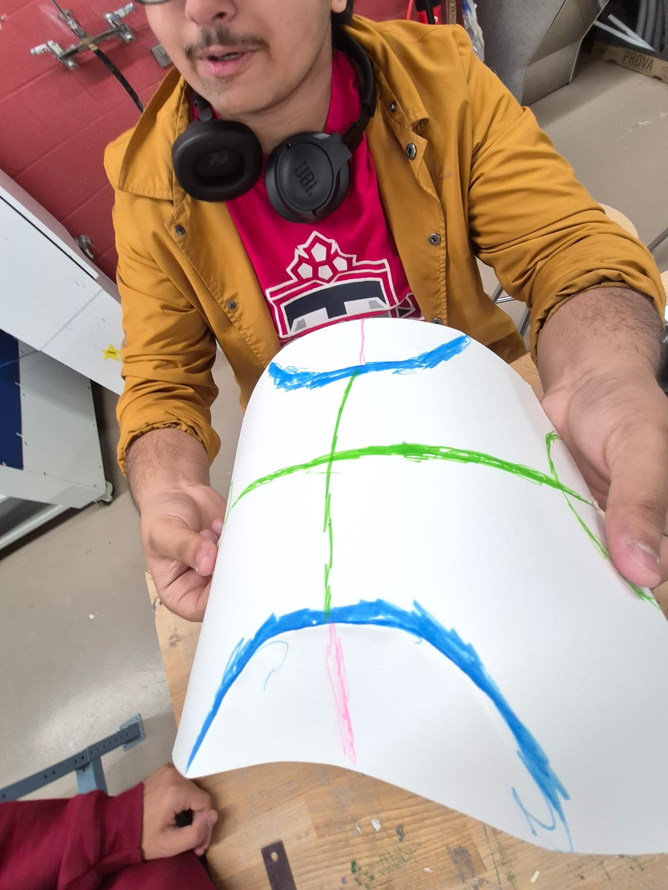
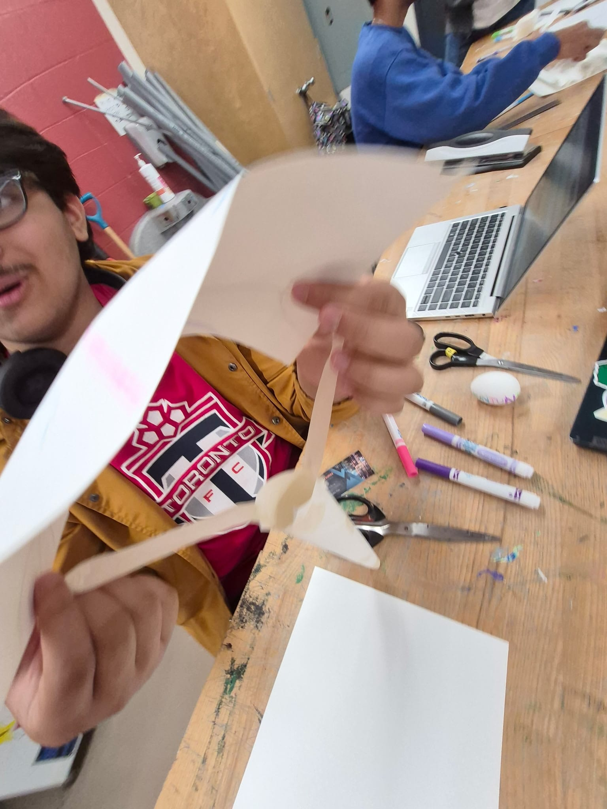
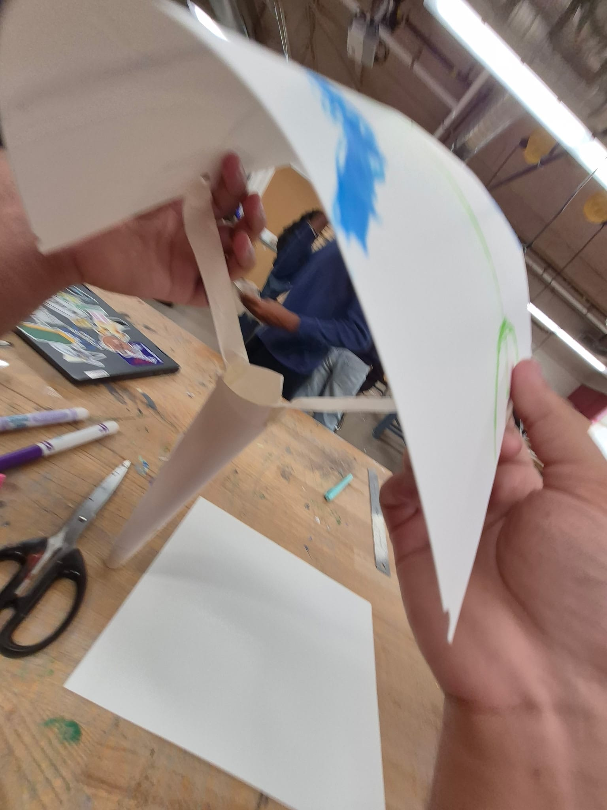
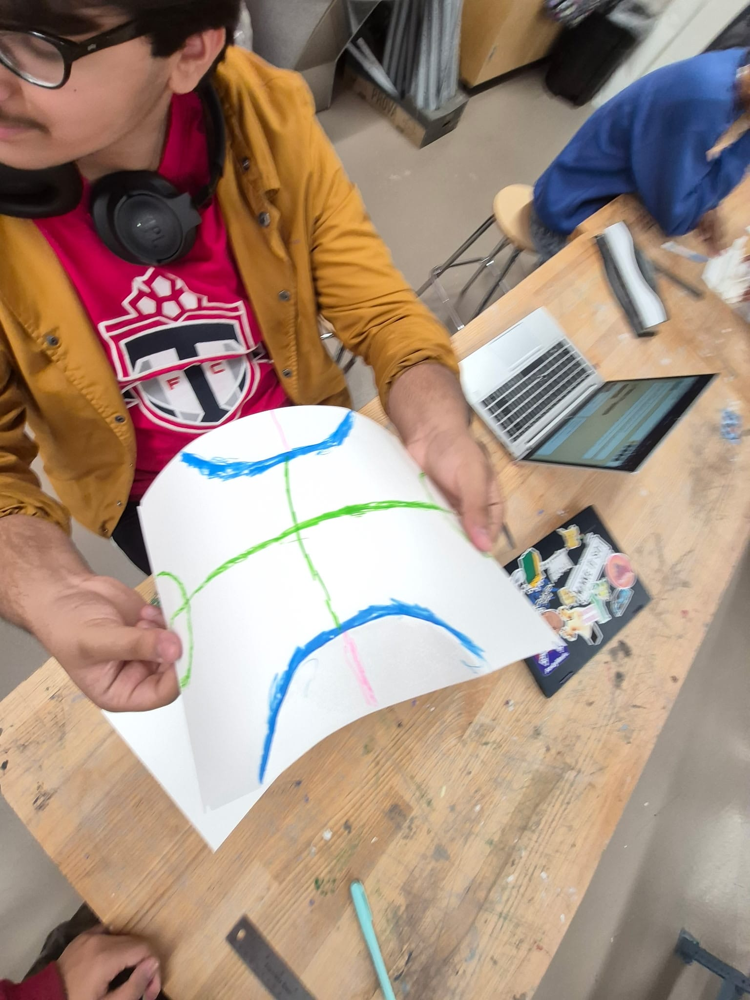
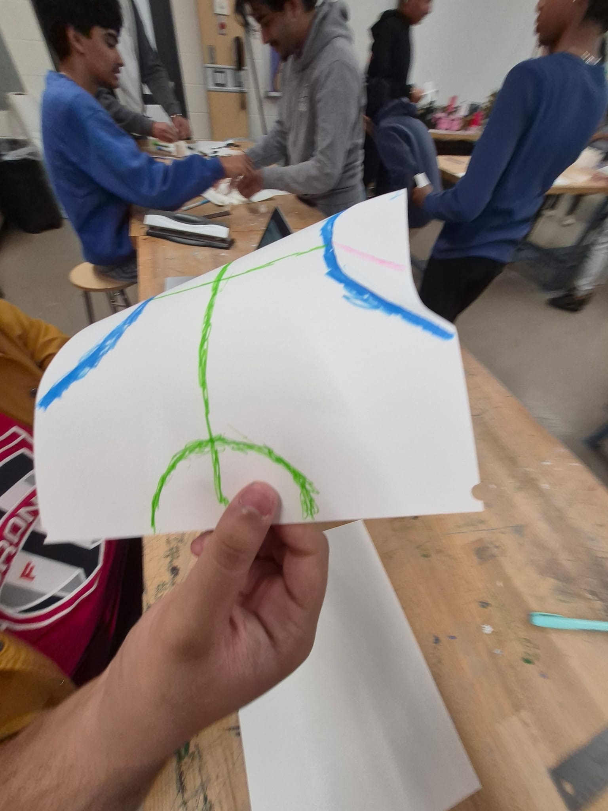
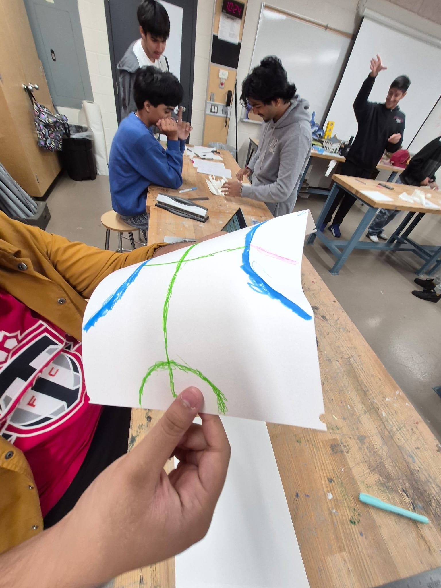
Every line on that sheet means something: green for the folds, blue for the edges, pink for where the tape runs.
It was drawn on the flat cardstock before anything was cut, so the canopy existed on paper first — and then it was folded, taped and flexed until it held a curve on its own.
prototype at a glance
- Attempt
- Build 01
- Shell
- Open cardstock box
- Deceleration
- Canopy, unsealed
- Outcome
- Failed
why we think this build is special
| Why it is special | The detail |
|---|---|
| Drawn first | Fold lines, cut lines and tape lines all went onto one flat sheet of the issued cardstock, so the canopy was a plan before it was a shape. |
| One sheet | The whole canopy comes out of a single sheet, scored and flexed by hand until it held its own curve. No frame, no spars, nothing bought in. |
| A hub | Three flat blades meet a folded cone at the centre, so the canopy has exactly one place to attach and exactly one place to fail. |
| Built to answer one question | The canopy was the one idea we could not check with a calculation, so build 01 existed to test it. The test said no, quickly and cheaply. |
| Kit only | Cardstock, tape and markers from the issued box. The first attempt cost us one class, not one design. |
Special is not the same as successful — everything above is why 01 was worth building, and the verdict below is what it earned.
IDEA FAILED
Build 01 retired.
The egg took the full hit, so the whole approach was scrapped and rebuilt around a sealed shell.
04B / construction of final
Construction of final
Build 02: the same idea rebuilt as a sealed package — a canopy over a shell of cardstock tubes taped shut on every seam.
Everything on this page belongs to this build.
build 02 · build photos
four tubes, taped and labelled
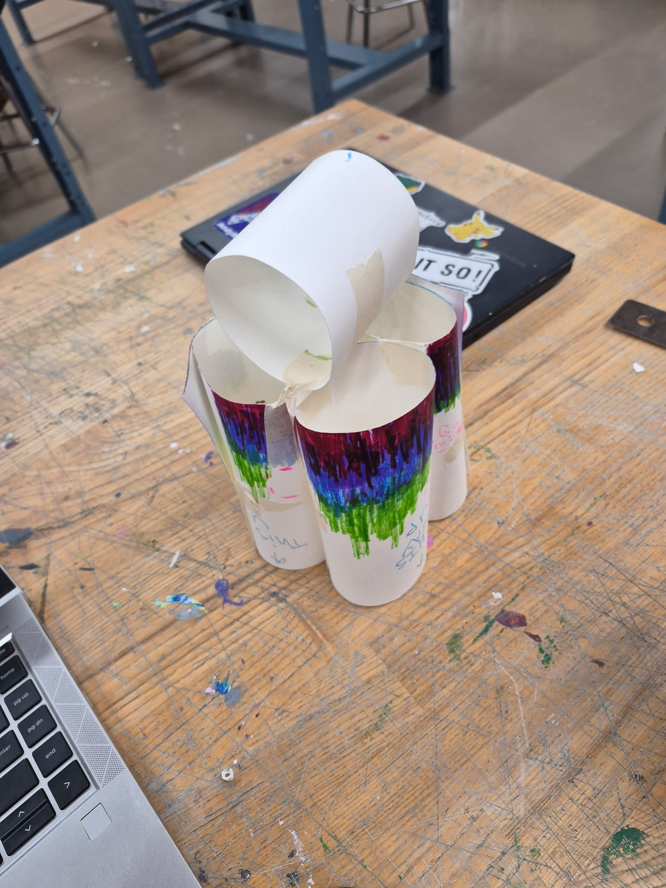
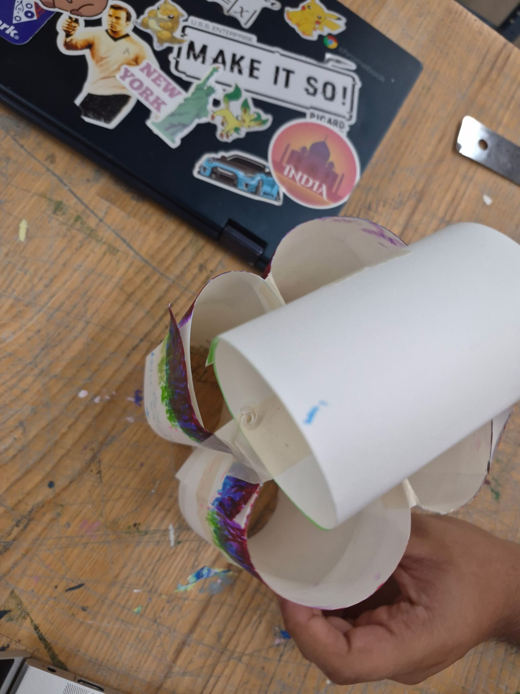
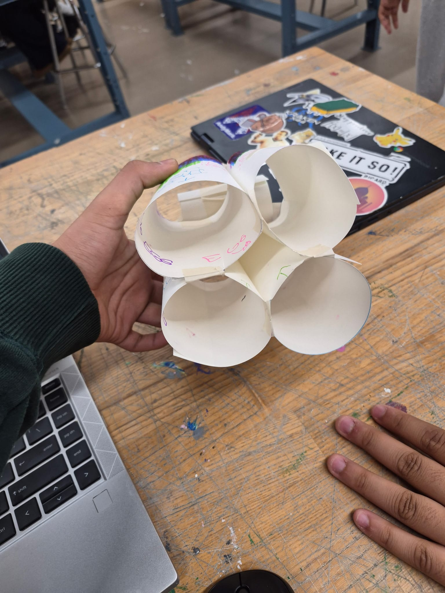
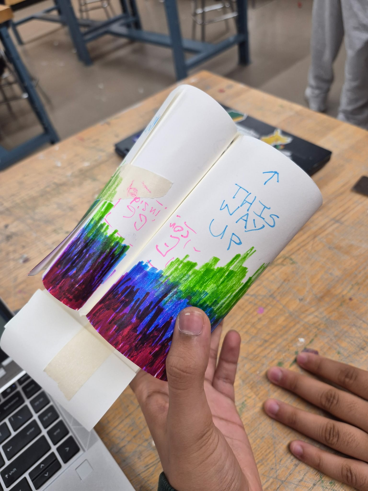
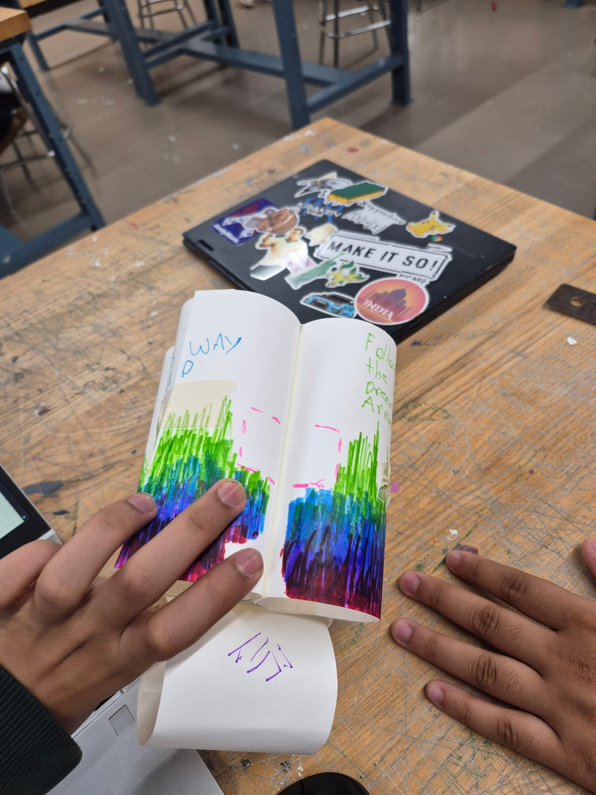
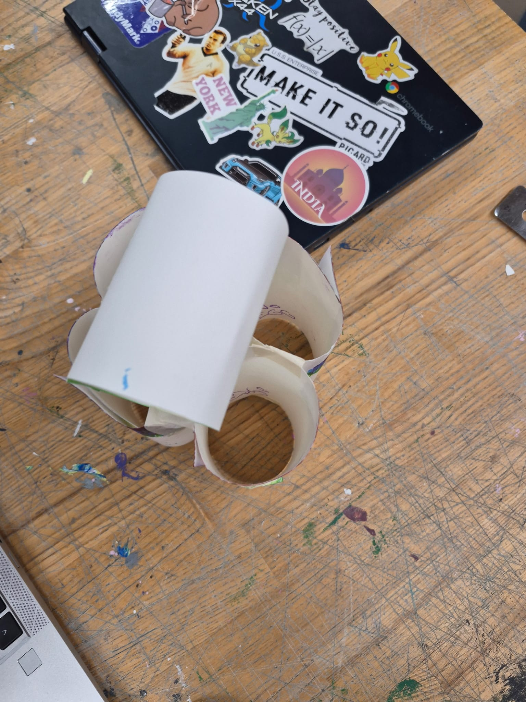
The outside of the shell is doing two jobs at once: bands of marker colour wrapped around the tubes, and the instructions written straight onto the cardstock — this way up, follow the dotted axis.
Those labels are not decoration.
The package only works if it lands the right way, and the writing is what keeps that true every time we hand it over.
final build at a glance
- Attempt
- Build 02
- Shell
- Sealed, tubed cardstock
- Deceleration
- Canopy + tube walls
- Outcome
- Failed — egg cracked
why we think this build is special
| Why it is special | The detail |
|---|---|
| Sealed | Every seam in the shell is taped, so there is no open side left for the egg to slide out of. It is the single change that answers what killed build 01. |
| Four tubes | The shell is four cardstock tubes taped into one bundle rather than a folded box. A curved wall resists being crushed far better than a flat panel. |
| This way up | The landing instructions are drawn onto the shell itself. The rig only survives if it arrives the right way round, so the label is part of the mechanism. |
| Colour bands | Bands of marker colour wrap around the tubes, so a drop can be read at a glance — which end was up, and which end took the hit. |
| Canopy on top | The curved panels over the open ends do the slowing down, so the shell meets the floor at a speed it can actually take. |
Every detail here is a direct answer to build 01 — the canopy that gave out, the open box, the egg that moved — and build 02 is what the failure taught us, made out of the same material.
part 01
Parachute
Slows the fall.
part 02
Suspension tape lines
Keep the shell hanging level.
part 03
Outer shell
Takes the first hit.
part 04
Egg seat
Holds the egg still and absorbs shock.
division of labour
The ballistic half decelerates the rig on the way down; the structural half handles whatever is left when it arrives.
assembly — exploded view
- Payload mass
- 1 boiled egg
- Canopy
- 1 cardstock sheet
- Lines
- 4 × equal length
- Shell
- 2 sheets folded
> materials
Issued kit
-
Cardstock · 3 sheets
The outer shell and the parachute canopy.
Folded, it doubles as the padding that protects the egg inside.
-
Tape · 1 arm-length
The suspension lines, and what is holding the whole package together.
> tools
On the bench
✂ Scissors
▭ Ruler
✎ Marker
◌ Hole punch
Tools are for shaping the materials only.
Nothing from the bench ends up inside the final package.
next stage
05 / Evaluation — did it actually work?